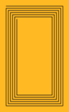
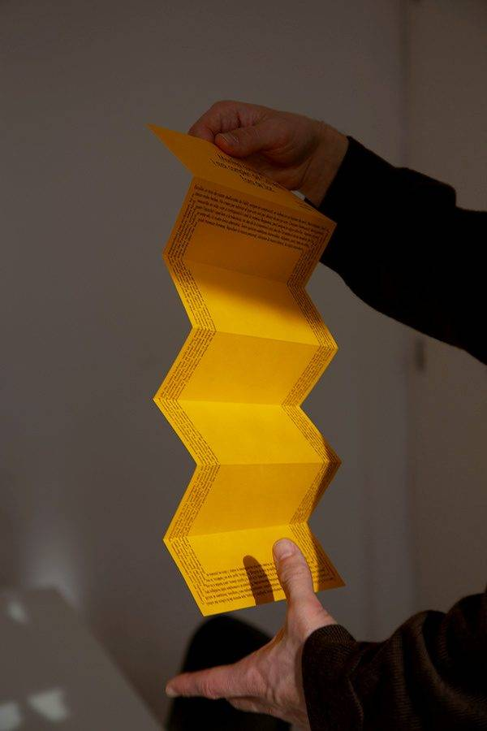
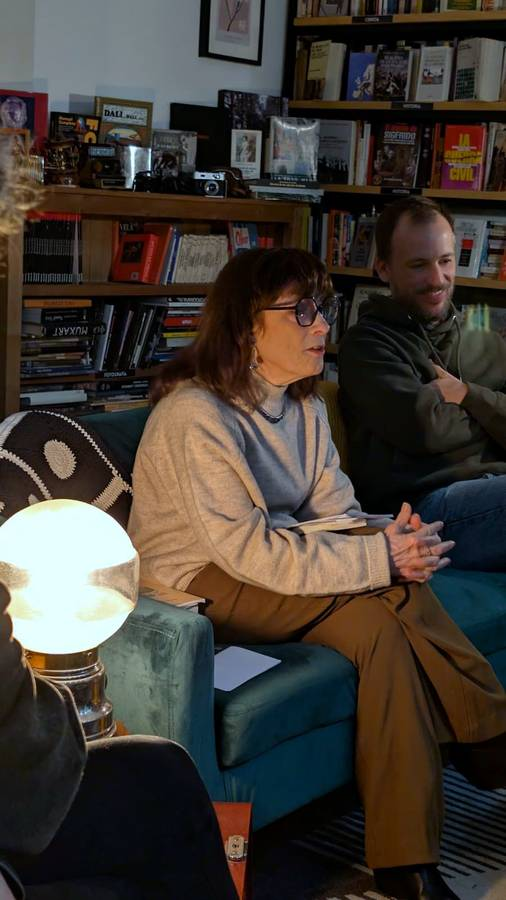
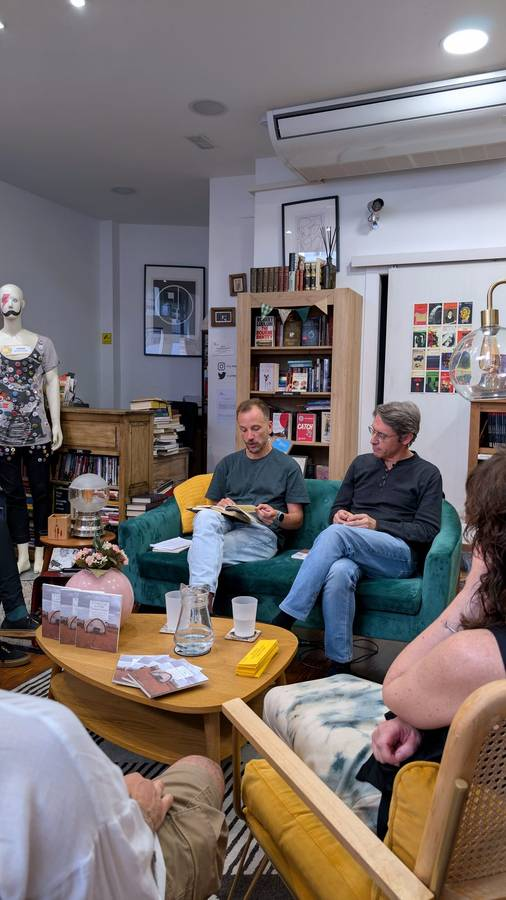

Colectivo Fuera de Lugar · Col·lectiu Fora de Lloc
Crear donde no alcance ninguna raíz.
Escogemos un mundo de ciudades recordadas, siempre en construcción, en terrenos donde no deberían estar. Reivindicamos el exilio y el destierro, la creación como una solicitud de asilo, el viaje como acto frustrante e improductivo.
El manifiesto, entero →

Manifiesto
Cambiante y nunca cumplido. En español, català, english, français, português y asturianu.

Eventos
Los ciclos En voz alta, La Magistral y 14.4, con La Perecquiana en Valladolid.

Galería
Las sesiones tal como ocurrieron: librerías llenas, gente leyendo en voz alta.